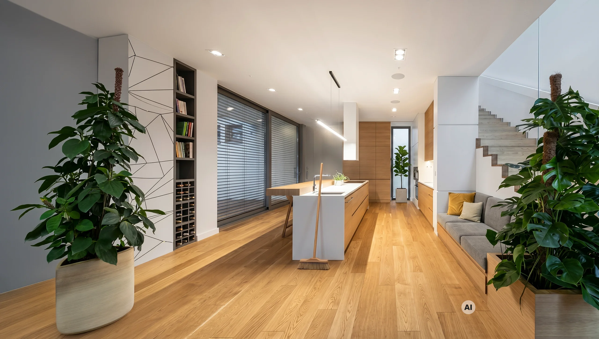
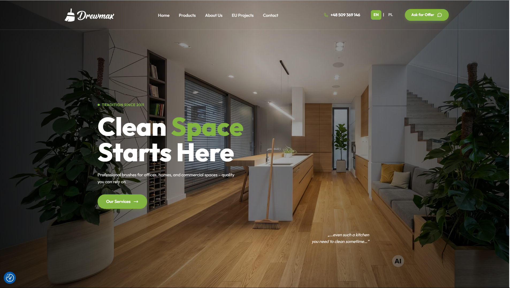

![Grafmen]()
Strona WWW / 2024
Drewmax.pro
Strona internetowa producenta szczotek i akcesoriów do sprzątania. Wielojęzyczny serwis porządkujący ofertę B2B dla rynków zagranicznych.

01 / POTRZEBA
10 lat ciągłej współpracy.
Drewmax to polski producent szczotek i akcesoriów do sprzątania z wieloletnią tradycją. Współpracuję z firmą od około 10 lat przy różnych projektach graficznych. W ostatnich około dwóch latach zakres współpracy objął również projektowanie i rozwój stron internetowych.
Zadaniem było przygotowanie nowoczesnego serwisu internetowego prezentującego pełną gamę produktów oraz ułatwiającego kontakt z partnerami handlowymi w Europie.
02 / ZAKRES
Co zrobiłem
- Projekt architektury informacji i podziału asortymentu.
- Indywidualny projekt graficzny UI w nowoczesnej stylistyce.
- Wdrożenie wersji wielojęzycznej (EN) zoptymalizowanej dla kontrahentów zagranicznych.
- Pełna responsywność mobilna i szybkie ładowanie stron.
03 / REALIZACJA
Projekt w zastosowaniu


04 / REZULTAT
Nowy serwis WWW dla producenta szczotek.
Powstał wielojęzyczny serwis WWW prezentujący ofertę produktową firmy, uporządkowany pod kątem partnerów handlowych w Polsce i za granicą.
Otwórz stronę Drewmax.pro ↗